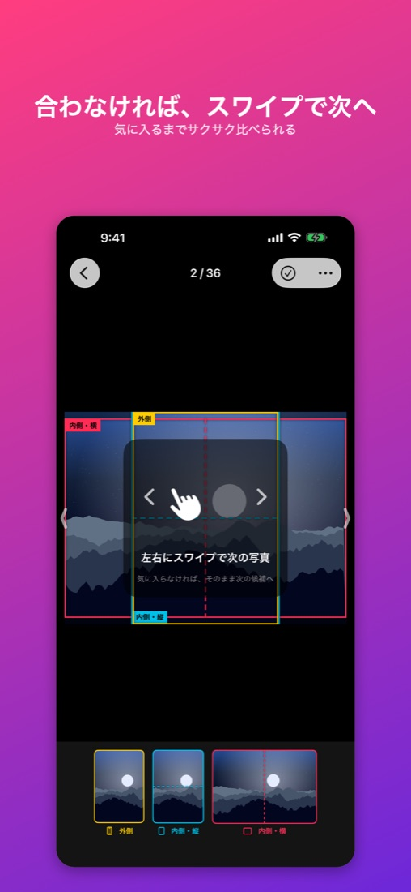
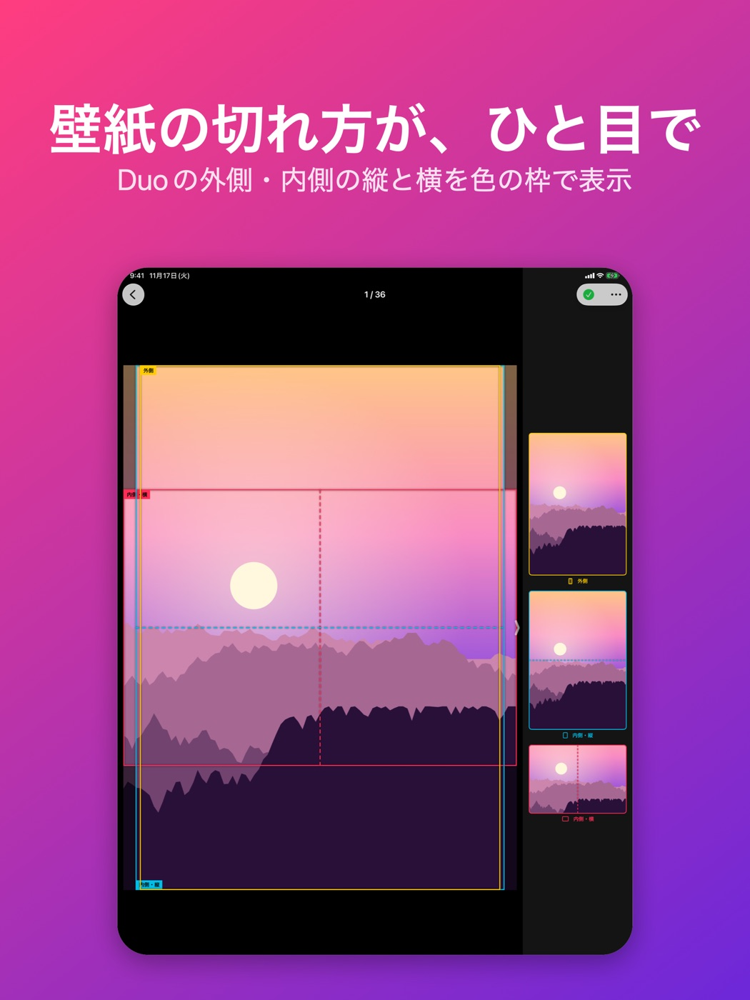

双璧
閉じても開いても、壁紙が決まる。
iPhone Duo の外側・内側の縦と横。同じ壁紙でも、画面ごとに切り取られる範囲が違います。双璧は、それを色の枠でひと目で見せる壁紙ガイドアプリです。
外側内側・縦内側・横
App Store で近日公開
機能を見る
開いたら、顔が切れていた。
Duo は、閉じた時と開いた時で画面の形がまったく違います。設定してから気づいて、何度もやり直す。そんな壁紙選びを終わらせます。
外側ディスプレイ
閉じた時の縦長の画面。いちばん目にする壁紙です。
内側・縦
開いて縦に持った時。折り目は横に通ります。
内側・横
本のように開いた大画面。折り目は真ん中を縦に通ります。

01
壁紙の切れ方が、ひと目で
写真の上に、外側は黄色、内側の縦は水色、内側の横はピンクの枠を重ねて表示。折り目の位置は点線で、どの画面にも映らない部分は暗く表示します。
- 3つの画面での実際の見え方を小さなプレビューで同時に確認

02
ピンチで切り取りを調整
2本指で広げる、すぼめるだけで枠の大きさが変わり、そのまま動かせば位置も変わります。
- 調整した写真は、3つの画面すべてに十分な解像度になるよう超解像で拡大して保存

03
合わなければ、スワイプで次へ
左右にスワイプするだけで次の候補へ。写真の一覧はすぐに開く軽快な設計なので、気に入るまでサクサク比べられます。

04
チェックして、まとめて保存
気に入った写真はチェックするだけ。一覧からまとめて専用アルバム「Duo壁紙」に保存できます。壁紙を設定する時は、そのアルバムから選ぶだけ。

05
はじめてでも迷わない
起動時の使い方ガイドと、操作中にときどき出る吹き出しで、スワイプやピンチの使い方をやさしく案内します。
開けば、大きな画面で。
Duo を開いた時や iPad では、写真と3つのプレビューを横に並べて表示します。

使い方は4ステップ
一覧から選ぶ
写真をタップして開きます。
枠を確認
3色の枠で切り取られる範囲を確認。
調整してチェック
ピンチで調整し、気に入ったらチェック。
まとめて保存
専用アルバムから壁紙に設定。
写真はすべて端末の中だけで処理し、外部に送信することはありません。画面ごとの切り取り範囲は、公開されている画面サイズから計算した目安です。